Visits
Upcoming visit
Helper assigned
24 OCT
Hedgewar hospital
Dr Ranjana Deshmukh

Reason
Monthly follow up appointment
22 days ago
Completed
28 SEP
Hedgewar hospital
Dr Ranjana Deshmukh
Reason
Monthly follow up appointment
46 days ago
Completed
4 SEP
Hedgewar hospital
Dr Nikhil Kulkarni
Reason
Cold and fever viral infection
Visit added. Helper details a day before.